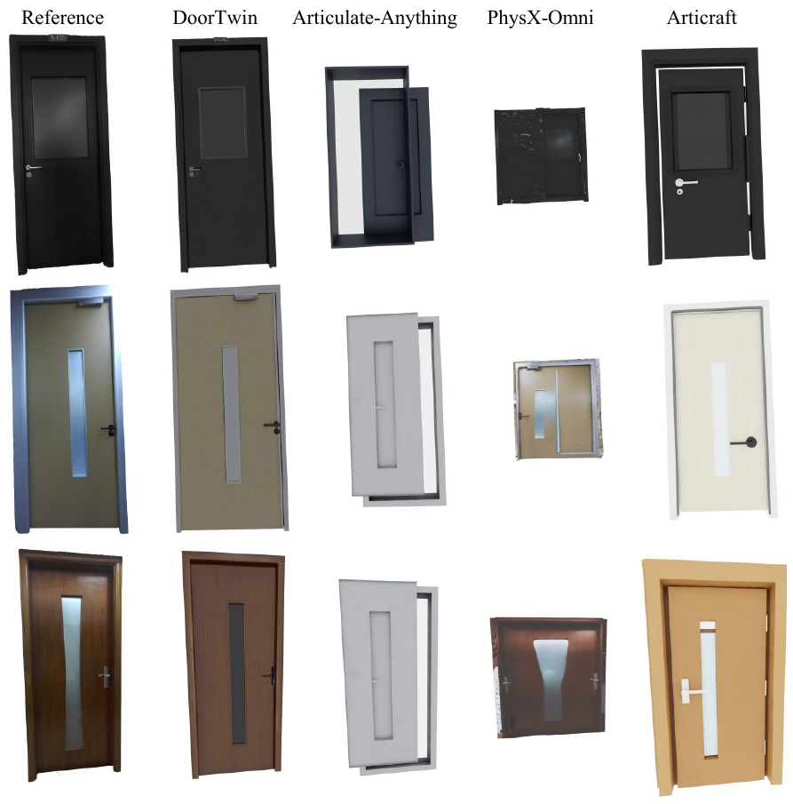
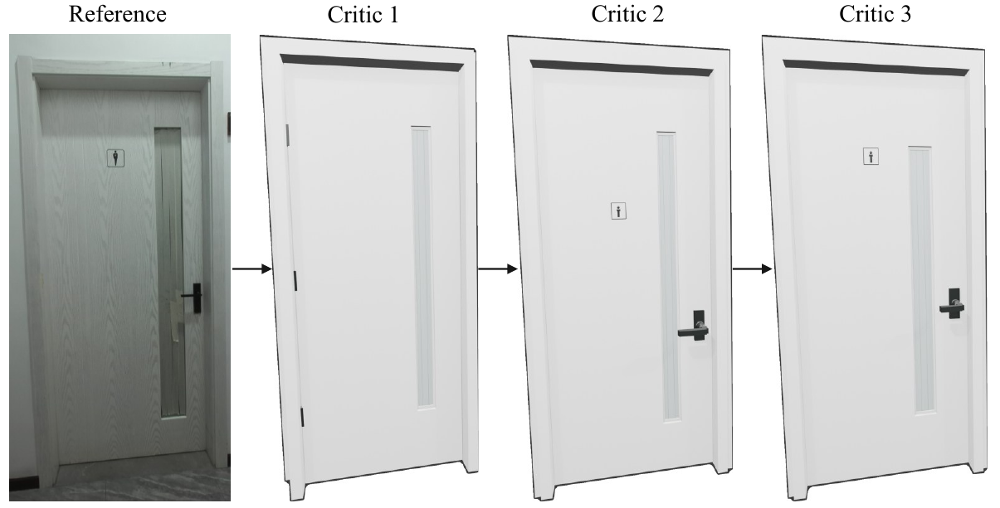
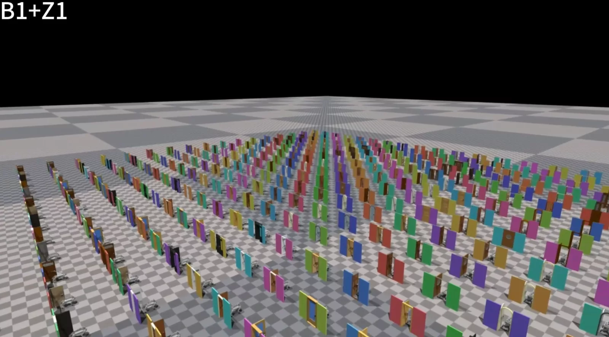
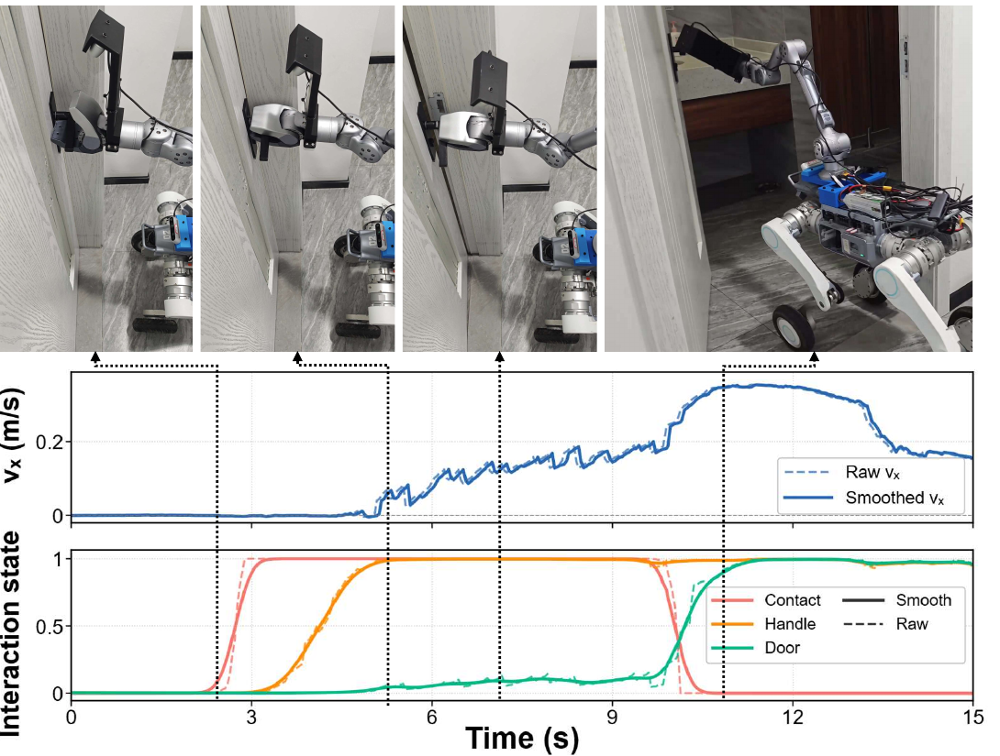
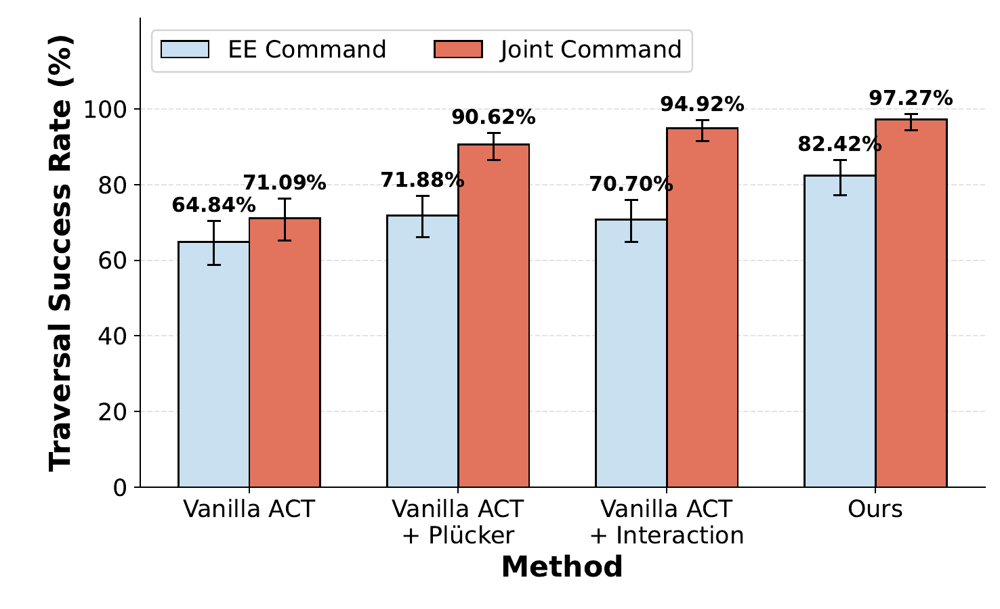
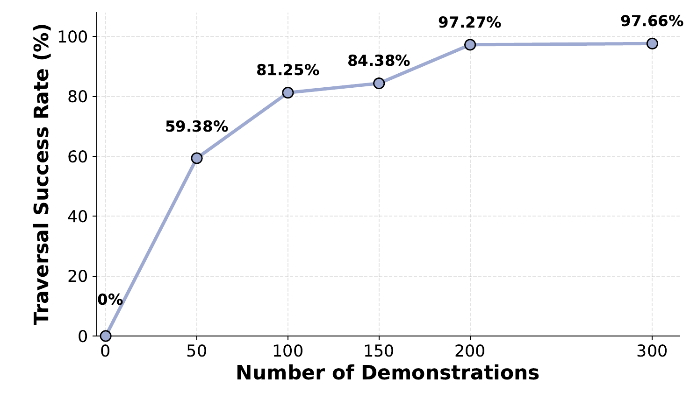

Single RGB video
Capture the door once
A short handheld scan provides multi-view visual evidence of the door, frame, handle and surrounding context.
Articulated Door Twins for Real-to-Sim-to-Real
Wheel-Legged Door Traversal from a Single Video
One-shot Real-to-Sim-to-Real Door Traversal
One video builds the door twin. One policy then succeeds again and again in the real world.
Repeated closed-loop traversal demonstrates stable contact, coordinated whole-body control and robust real-world execution.
No per-door teleoperation and no real-world fine-tuning. A single RGB capture seeds a policy that remains stable across repeated trials.
Abstract
Door traversal is not a single interaction. The robot must approach, find and rotate a handle, move its whole body with the door, and clear a narrow passage without losing contact.
Video2DoorTraversal is a one-shot real-to-sim-to-real framework for this long-horizon, contact-rich task. From one short handheld RGB video, DoorTwin reconstructs an instance-aligned, articulated and simulation-ready door. A simulation-in-the-loop agent turns the recovered articulation into executable demonstrations, while ArticuACT learns coordinated base, arm and gripper control from onboard observations.
The result is a complete door-to-policy pipeline: one capture, scalable simulation, and closed-loop traversal on a real wheel-legged mobile manipulator.
One video is a specification, not a demonstration. It describes the door instance; the simulator generates the robot experience.
Method
Single RGB video
A short handheld scan provides multi-view visual evidence of the door, frame, handle and surrounding context.
DoorTwin
Geometry, appearance, hinge structure and handle placement become a simulation-ready, instance-specific asset.
Agentic expert + ArticuACT
Simulator-verified skills create robust demonstrations that train coordinated whole-body control for the real robot.
Instance grounded in the observed door rather than a generic procedural asset.
Physics verified through generate, execute, diagnose and refine loops.
Closed loop from onboard depth and proprioception at deployment.
Stage 01 · DoorTwin
DoorTwin turns the observed instance into a usable articulated asset—preserving task-relevant scale, part relationships, hinge direction, handle placement and appearance.

Multi-view RGB evidence anchors the panel, frame and handle into a consistent instance representation suitable for downstream articulation modeling.
The asset is built around task-critical joints and local component relationships, not just visual resemblance.
A reference-view critic checks silhouette, handle type, proportions and placement, then feeds structured corrections back to generation.

Stage 02 · Agentic Expert
A simulation-in-the-loop agent instantiates a parameterized traversal program, diagnoses failed rollouts and makes bounded revisions until the behavior is physically executable.

Execute skill program
Diagnose failure
Revise parameters
Collect success
Stage 03 · ArticuACT
ArticuACT uses front- and wrist-view depth with robot proprioception to predict coordinated base velocity, arm joints and gripper commands over long horizons.
Pixel-aligned Plücker ray maps express both camera views in the shared robot-base frame, reducing ambiguity under camera perturbations.
Auxiliary future states supervise stable contact, handle rotation and door-opening progress without changing the deployment control interface.

Results


The one-shot advantage
A policy trained from one reconstructed door can directly traverse structurally similar unseen doors without additional trajectory generation or real-world fine-tuning.
In one line
ONE VIDEO gives the robot a door it can simulate, practice and finally traverse in the real world.
Reference
@article{tang2026video2doortraversal,
title = {Video2DoorTraversal: Articulated Door Twins for
Real-to-Sim-to-Real Wheel-Legged Door Traversal
from a Single Video},
author = {Tang, Xincheng and Chen, Yiji and Xie, Youhan and
Li, Wanyu and Shu, Zhengjie and Jiang, Lai and
Hu, Wenkang and Li, Yitong and Zhang, Jinchuang and
Song, Xibin and Yang, Ruigang},
journal = {arXiv preprint},
year = {2026}
}The arXiv identifier and publication venue will be added when available.